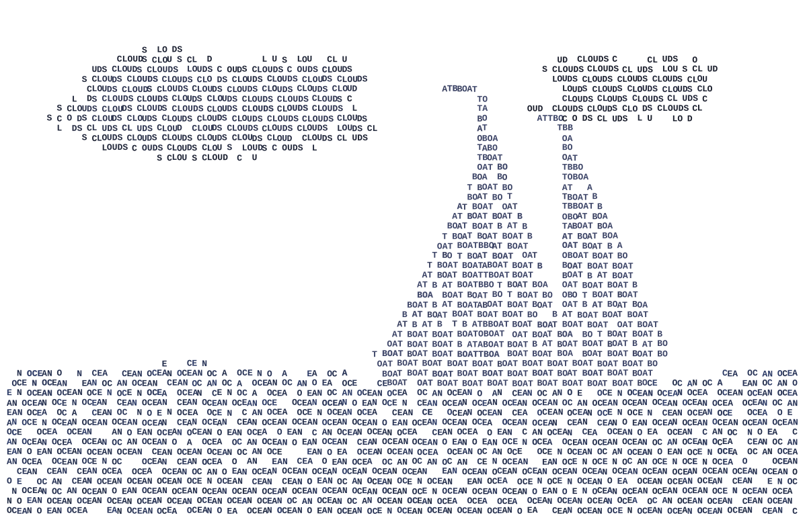
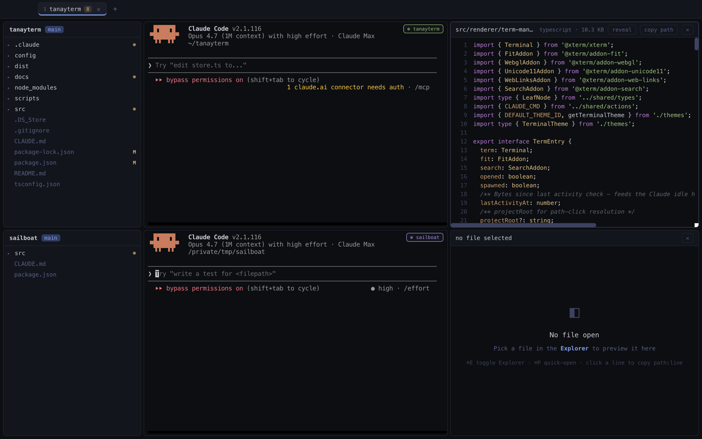
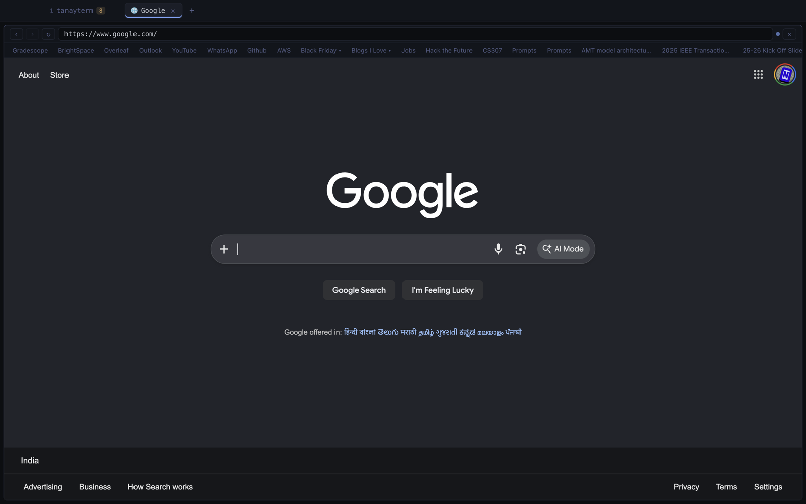
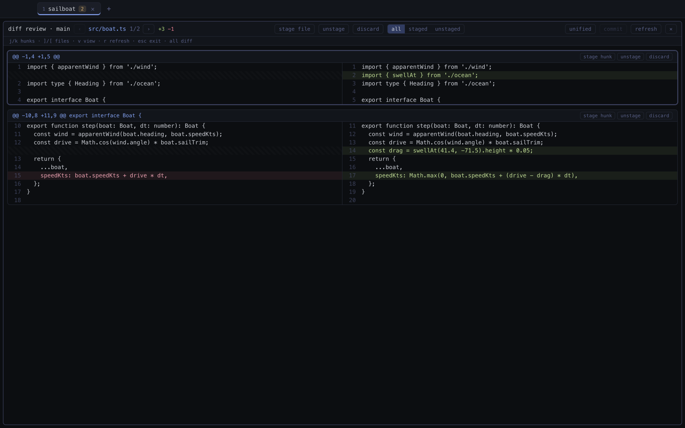
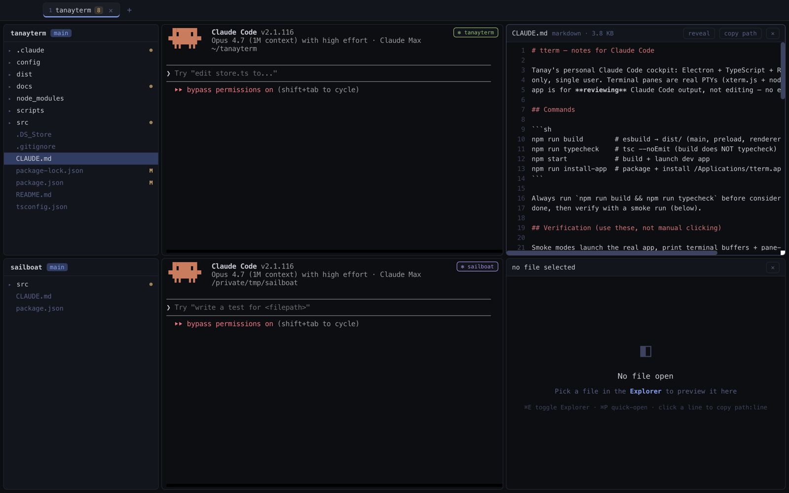
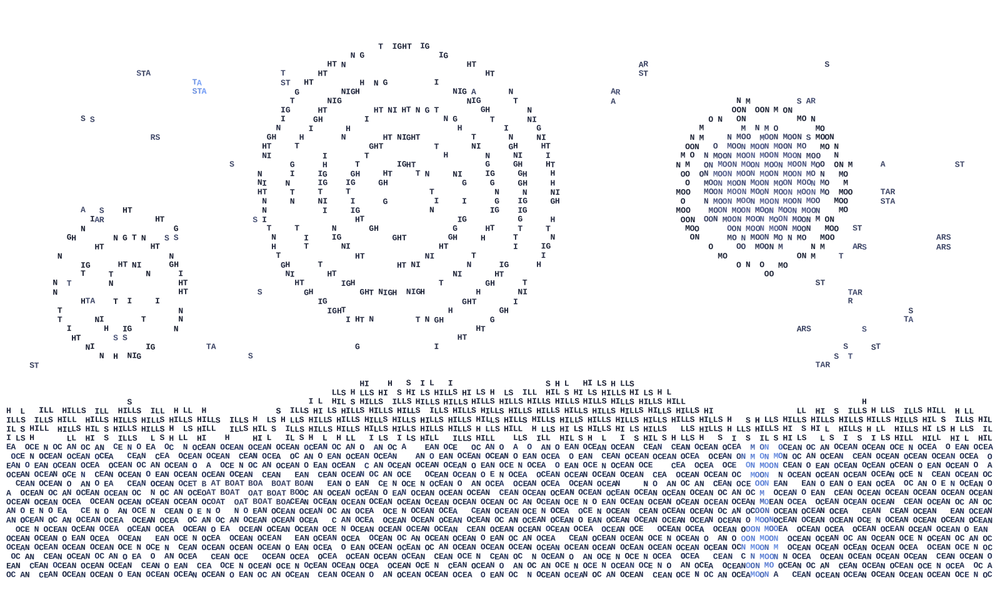

A terminal, a real browser, and Claude Code — under one roof.
Free — no account, no telemetry. One developer's daily driver, shared.

Real screenshots — tterm took them of itself. Click the window, then use the real chords.
Explorer, Claude Code, file viewer — stack as many projects as you're juggling.
⌘B — your Chrome cookies, bookmarks, and history come along.

No editor, on purpose. ⌘G — stage what's right, hunk by hunk, and commit.

⌘K → Claude on tterm itself — ask for a feature and the running app hot-reloads with it. Most of tterm was built this way.


Only ⌘-chords are ever intercepted — every ctrl key reaches the pty untouched.
macOS · ad-hoc signed, so Gatekeeper balks once — allow it under System Settings → Privacy & Security. No account, no telemetry, nothing phoning home.